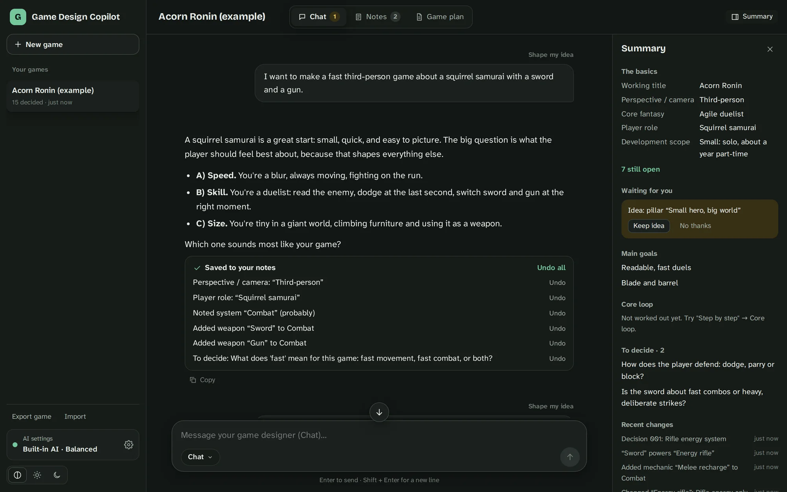
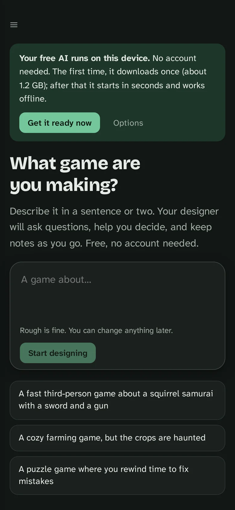
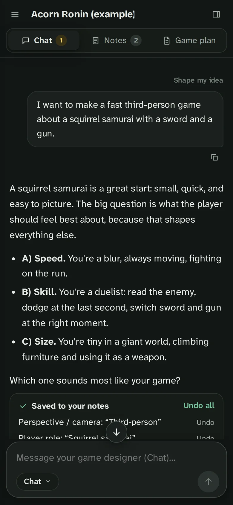

Decided
You chose it. Only decided notes go into the game plan.
An AI design partner for solo developers and beginners. Describe your game; it asks questions, gives honest feedback, and keeps notes of every decision. Free, with no account: the AI runs in your browser.

Most AI chats forget what you decided a few messages ago, or quietly treat their own suggestions as settled. In game design that hurts: one changed mechanic ripples through combat, levels, and scope.
So I wrote a spec for the opposite: a copilot that keeps structured notes, asks before it saves an AI idea, remembers what you ruled out, and tells you what a change affects. It helps you think through a design; it doesn’t make the game for you. You stay the creative director.
It’s also a first working prototype of the GDD-aware assistance idea from my Custom AI research ↗
Real screens from the built-in example: a squirrel samurai with a sword and an energy rifle. Arrow keys work too.
The designer answers with a few clear options and one question. Facts you state go straight into your notes, each with its own Undo.
Every fact about the game is a note with a status, not a line buried in chat history.
You chose it. Only decided notes go into the game plan.
Implied by what you said, but not confirmed yet.
Being considered. The AI’s suggestions always start here.
You said no. The designer won’t suggest it again, and the app flags it if it comes back.
Open questions the copilot keeps track of until you answer them.
Big choices are logged with the reason, so you can see how the design got here.
The default AI runs on your own device, inside the browser, using the graphics chip (WebGPU, through WebLLM). It downloads once, about 0.5 to 2.3 GB depending on the size you pick, and then works offline. If Chrome’s own built-in AI is ready, the app uses that and downloads nothing.
Games are saved in the browser too, with export and import for backups. Bigger online AIs (Gemini, ChatGPT, Claude) are optional for people who already have a key.


What happens every time you send a message.
All the design logic lives in one framework-free TypeScript core behind two small interfaces, one for the AI and one for storage. That’s why the same code runs with the built-in AI, the online AIs, and the tests: 64 automated tests, including whole scripted design sessions.
Playable prototype. The free built-in AI is a small model, so its answers are shorter and simpler than big online AIs, and it needs a WebGPU browser (recent Chrome or Edge, or Safari on macOS or iOS 26). The automated tests use a scripted stand-in AI; tuning on the real model comes next.